در زبان برنامهنویسی پایتون، برای پیادهسازی حلقههای تکرار دو ساختار اصلی وجود دارد:
حلقۀ for
حلقۀ while
حلقۀ for : برای تکرار اجرای دستورات روی یک دنباله (مانند لیست، رشته، توپل، مجموعه و دیکشنری) استفاده میشود و معمولاً زمانی به کار میرود که تعداد تکرارها از قبل مشخص یا قابلتعیین باشد.
ساختار کلی حلقۀ for در زبان پایتون به شکل زیر است:
for variable in sequence:
statements
در این ساختار:
variable متغیری است که در هر تکرار، مقدار یکی از عناصر دنباله را دریافت میکند.
نام متغیر میتواند دلخواه باشد؛ مثلاً (i, count, num, student…)
sequence یک دنباله مانند لیست، رشته، توپل، مجموعه یا دیکشنری است.
statements مجموعه دستوراتی در بدنه حلقه هستند که در هر بار تکرار، اجرا میشوند. به این دستورات اصطلاحاً بلاک حلقه گفته میشود و بایستی به اندازه یک tab تورفتگی داشته باشند.
پیمایش لیستها
مثال ۱: کد زیر عناصر یک لیست شامل سهرنگ (red, blue, green) را چاپ میکند (شکل73).
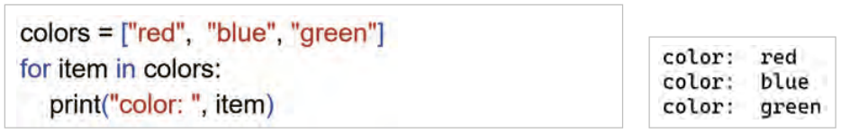
شکل ۷۳
توضیح کد: در خط اول، یک لیست حاوی نام سهرنگ بهصورت رشتهای تعریف شده است.
در خط دوم، دستور for عناصر لیست را به ترتیب پیمایش کرده و هر عنصر را در متغیر item قرار میدهد.
مثال 2: نمایش سبد خرید، در این برنامه، ابتدا لیستی با نام shopping_cart ایجاد شده و کالاهای خریداریشده در آن ذخیره میشوند. سپس عناصر موجود در لیست با استفاده از حلقه for چاپ میشوند. برنامه را اجرا و نتیجه را مشاهده کنید (شکل74).
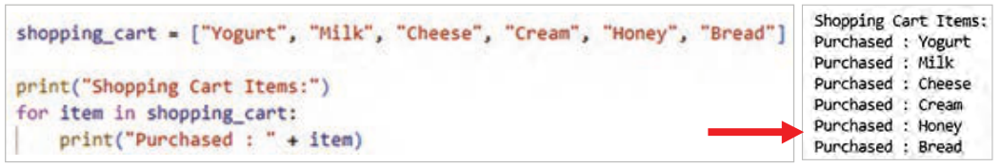
شکل ۷۴
صفحه ۳۴
توضیح کد: در خط اول، یک لیست حاوی نام کالاهای خریداری شده بهصورت رشتهای تعریف شده است. دومین خط، یک پیغام مناسب را قبل از ورود به حلقه چاپ میکند.
در خط سوم، دستور for عناصر لیست را به ترتیب پیمایش کرده و هر عنصر را در متغیر item قرار میدهد. در خط پایانی، یک پیغام حاوی نام تکتک عناصر لیست چاپ میشود.
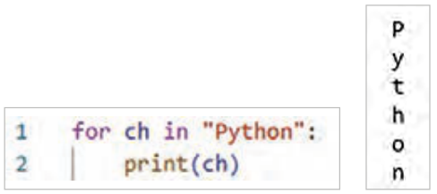
شکل ۷۵
پیمایش رشتهها
مثال: چاپ حروف کلمه python (شکل75)
توضیح کد: در هر بار اجرای حلقه، یکی از حروف رشتۀ python در متغیر ch قرار گرفته و همان مقدار در داخل حلقه چاپ میشود.
نمونههایی از کاربرد حلقۀ for
مثال ۱: برنامۀ زیر برای شمارش تعداد عناصر یک لیست با استفاده از حلقۀ for نوشته شده است (شکل76).
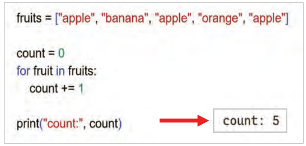
شکل ۷۶
توضیح کد: در خط اول، یک لیست حاوی نام چند میوه بهصورت رشتهای تعریف شده است.
در خط دوم، متغیر count با مقدار اولیه صفر ایجاد میشود.
در خط سوم، حلقۀ for عناصر لیست را به ترتیب پیمایش کرده و هر عنصر را در متغیر fruit قرار میدهد. در خط چهارم، بهازای هر بار اجرای حلقه، یک واحد به متغیر count افزوده میشود. دو دستور زیر معادل هستند.
count + = 1
count = count + 1
در خط پایانی، مقدار نهایی count چاپ میشود. توجه داشته باشید که این خط خارج از حلقه قرار دارد.
صفحه ۳۵
مثال 2: اگر هدف، شمارش تعداد یک عنصر خاص (برای مثال، تعداد apple) درون حلقه باشد، میتوانید با استفاده از دستور شرطی if برنامه را بهصورت زیر تغییر دهید (شکل77).
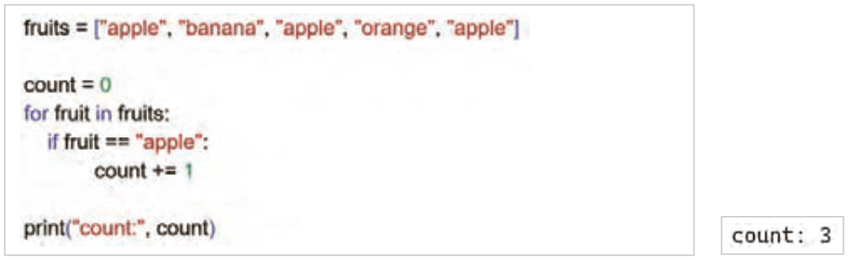
شکل ۷۷
توضیح کد: در خط چهارم، دستور if بررسی میکند که آیا مقدار fruit با مقدار apple برابر است یا خیر؟ درصورتیکه شرط فوق برقرار باشد، یک واحد به متغیر count افزوده میشود.
استفاده از تابع range(): تا اینجا، از حلقۀ for برای پیمایش عناصر موجود در لیستها و رشتهها استفاده شده است.
در برخی موارد، لازم است یک دستور به تعداد دفعات مشخصی تکرار شود، بدون آنکه از قبل لیستی از مقادیر در اختیار باشد.
در چنین شرایطی، از تابع range استفاده میشود.
تابع range() یک دنباله از اعداد تولید میکند که از مقدار start آغاز شده و با گامهایی که در step مشخص میشود، تا قبل از مقدار stop ادامه مییابد.
Start: (اختیاری و پیشفرض)
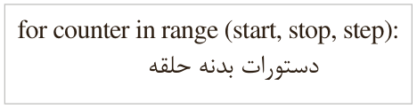
شکل ۷۸
Stop: (اجباری) است و خود آن انجام نمیشود. Step: (اختیاری) ـ پیشفرض آن یک است.
صفحه ۳۶
اولین حالت: در سادهترین حالت، تابع range() تنها یک عدد دریافت میکند که بهصورت range(stop) نوشته میشود. به مثال زیر توجه کنید:
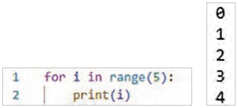
شکل ۷۹
مثال: حلقهای برای چاپ اعداد 0 تا ۴ (شکل79).
توضیح کد: مقدار شروع (start) به طور پیشفرض صفر است و گام (step) نیز به طور پیشفرض مقدار یک را دارد. مقدار پایان (stop) عدد ۵ در نظر گرفته شده و خود این عدد در خروجی تولید نمیشود. تابع (range)5 دنبالهای از اعداد ۰ تا ۴ را تولید میکند. حلقۀ for به تعداد ۵ بار اجرا میشود. متغیر i در هر تکرار مقدار یکی از این اعداد را دریافت میکند. در خط دوم، در هر بار اجرا مقدار متغیر i چاپ میشود.
دومین حالت: استفاده از تابع بهصورت range(start, stop) خواهد بود.
مثال: حلقهای برای چاپ اعداد از ۱ تا 6 (شکل80).
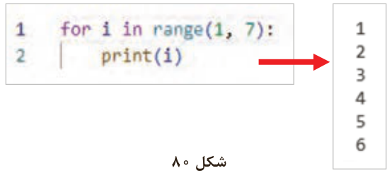
شکل ۸۰
توضیح کد: مقدار شروع (start) درون دستور range، یک است.
مقدار پایان حلقه (stop) عدد 7 است؛ ولی خود عدد 7 در نظر گرفته نخواهد شد. تابع range دنبالۀ اعدادِ از ۱ تا 6 را تولید میکند.
گام (step) نیز به طور پیشفرض برابر یک است.
**در حالت سوم، ** تابع range سه عدد دریافت میکند که بهصورت range(start, stop, step) نوشته میشود. به مثال زیر توجه کنید:
مثال: حلقهای برای چاپ اعدادِ زوج کوچکتر از 10 (شکل81).
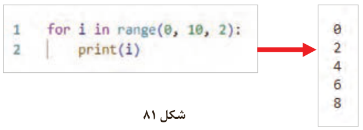
شکل ۸۱
صفحه ۳۷
توضیح کد: مقدار شروع (start) در دستور range برابر با صفر است.
مقدار پایان (stop) عدد ۱۰ در نظر گرفته شده است، اما خود این عدد در خروجی تولید نمیشود. مقدار گام (step) برابر با 2 است.
تابع range دنبالهای از اعدادِ زوج از 0 تا ۸ را تولید میکند.
استفاده از کاراکتر زیرخط (_ ) در نام متغیرها مجاز است؛ بنابراین میتوان از آن بهتنهایی نیز بهعنوان نام یک متغیر استفاده کرد.
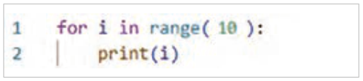
شکل ۸۲
کد شکل82 را مشاهده کنید.
در این مثال، از متغیر شمارندۀ حلقه در بدنۀ حلقه استفاده نشده است؛ بنابراین میتوان بهجای آن از کاراکتر زیرخط (_) استفاده کرد. استفاده از _ نشان میدهد که مقدار متغیر موردنظر در ادامۀ برنامه استفاده نخواهد شد.
صفحه ۳۸
معرفی دستورات کنترلی (break و continue) در حلقهها
در زبان پایتون، دستورات کنترلی break و continue برای کنترل جریان اجرای حلقهها استفاده میشوند.
continue: برای رد شدن از یک بخش خاص از حلقه و رفتن به تکرار بعدی استفاده میشود.
break: اجرای حلقه را به طور کامل متوقف کرده و از آن خارج میشود.
مثال: برنامه زیر را نوشته و اجرا کنید. در این برنامه، نام تمام غذاهای موجود در یک لیست، هر کدام در یک خط چاپ میشوند. (شکل83)
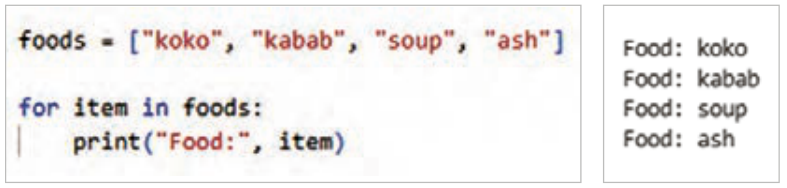
شکل ۸۳
حال اگر بخواهید هنگام چاپ، نام یک غذای خاص (برای مثال، soup) نمایش داده نشود، میتوان از دستور continue درون حلقه استفاده کرد. کد زیر را با دقت نوشته و اجرا کنید و هنگام نوشتن برنامه به تورفتگیها (Indentation) توجه داشته باشید (شکل84).
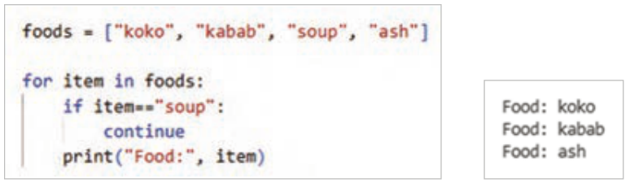
شکل ۸۴
توضیح کد: در خط if item == " soup"، بررسی میشود که آیا مقدار متغیر item با مقدار soup برابر است یا خیر.
در صورت برقرار بودن شرط if، دستور continue اجرا شده میشود و باعث میشود حلقه بلافاصله به سراغ عنصر بعدی برود که "ash" است. به همین دلیل، در خروجی برنامه نام soup چاپ نمیشود.
بهطورکلی، با استفاده از دستور continue، حلقه اجرای بخشی از کد درون حلقه را برای تکرارهای خاصی نادیده میگیرد و مستقیماً به ابتدای تکرار بعدی وارد میشود.
صفحه ۳۹
حال اگر بخواهید هنگام چاپ، با رسیدن به نام یک غذای خاص (برای مثال، soup) پیغام مشخصی چاپ شده و اجرای حلقه خاتمه یابد، میتوان از دستور break درون حلقه استفاده کرد. کد زیر را بنویسید و اجرا کنید. هنگام نوشتن برنامه به تورفتگیها (Indentation) توجه داشته باشید (شکل85).
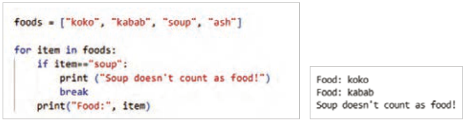
شکل ۸۵
توضیح کد: در خط سوم، بررسی میشود که آیا مقدار متغیر item با مقدار soup برابر است یا خیر.
در صورت برقرار بودن شرط if، ابتدا پیام "سوپ که غذا نیست!" چاپ میشود و سپس دستور break اجرا شده و کنترل اجرای برنامه به بعد از حلقه منتقل میشود. در این حالت، اجرای حلقه به طور کامل متوقف شده و تکرارهای بعدی انجام نخواهند شد (شکل86).
حال دو برنامه زیر را نوشته و اجرا کنید.
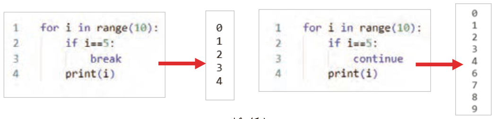
شکل ۸۶
Page 33
In Python there are two main structures for loops:
The for loop
The while loop
The for loop: used to run statements for each item of a sequence (such as a list, string, tuple, set, or dictionary), usually when the number of repetitions is known in advance or can be worked out.
The general form of the for loop in Python is:
for variable in sequence:
statements
In this structure:
variable is a variable that receives one element of the sequence on each pass.
The variable name can be anything; for example (i, count, num, student…)
sequence is a sequence such as a list, string, tuple, set, or dictionary.
statements are the statements in the body of the loop that run on each pass. They are called the loop block, and they must be indented by one tab.
Going through lists
Example 1: the code below prints the elements of a list of three colors (red, blue, green) (Figure 73).
Figure 73
About the code: on the first line, a list holding the names of three colors as strings is defined.
On the second line, the for statement goes through the list elements in order and puts each element in the item variable.
Example 2: showing a shopping cart. In this program a list named shopping_cart is created first and the purchased items are stored in it. Then the elements of the list are printed with a for loop. Run the program and see the result (Figure 74).
Figure 74
Page 34
About the code: on the first line, a list holding the names of the purchased items as strings is defined. The second line prints a suitable message before the loop starts.
On the third line, the for statement goes through the list elements in order and puts each element in the item variable. On the last line, a message with the name of each element of the list is printed.
Figure 75
Going through strings
Example: printing the letters of the word python (Figure 75)
About the code: on each pass of the loop, one letter of the string python is put in the ch variable, and that value is printed inside the loop.
Some uses of the for loop
Example 1: the program below counts the elements of a list with a for loop (Figure 76).
Figure 76
About the code: on the first line, a list holding the names of some fruits as strings is defined.
On the second line, the variable count is created with the starting value zero.
On the third line, the for loop goes through the list elements in order and puts each element in the fruit variable. On the fourth line, one is added to count on each pass of the loop. The two statements below are equivalent.
count + = 1
count = count + 1
On the last line, the final value of count is printed. Note that this line is outside the loop.
Page 35
Example 2: if the goal is to count one particular element inside the loop (for example, the number of apples), you can change the program with an if statement as below (Figure 77).
Figure 77
About the code: on the fourth line, the if statement checks whether the value of fruit equals apple. If it does, one is added to count.
Using the range() function: so far the for loop has been used to go through the elements of lists and strings.
Sometimes a statement must be repeated a certain number of times without a ready list of values.
In such cases the range function is used.
The range() function produces a sequence of numbers that starts at start and goes on, in steps of step, until just before stop.
Start: (optional, with a default)
Figure 78
Stop: (required), and it is not itself included. Step: (optional), default one.
Page 36
The first form: in the simplest form, the function range() receives only one number, written as range(stop). Look at the following example:
Figure 79
Example: a loop that prints the numbers 0 to 4 (Figure 79).
About the code: the start value (start) is zero by default, and the step (step) is one by default. The end value (stop) is 5, and 5 itself is not produced. range(5) produces the numbers 0 to 4. The for loop runs 5 times. On each pass the variable i gets one of these numbers. On the second line, the value of i is printed on each pass.
The second form: using the function as range(start, stop).
Example: a loop that prints the numbers 1 to 6 (Figure 80).
Figure 80
About the code: the start value (start) in the range statement is one.
The end value of the loop (stop) is 7, but 7 itself is not included. The range function produces the numbers 1 to 6.
The step (step) is one by default.
In the third form, the function range receives three numbers, written as range(start, stop, step). Look at the following example:
Example: a loop that prints the even numbers less than 10 (Figure 81).
Figure 81
Page 37
About the code: the start value (start) in the range statement is zero.
The end value (stop) is 10, but 10 itself is not produced. The step (step) is 2.
The range function produces the even numbers from 0 to 8.
The underscore character (_ ) is allowed in variable names, so it can also be used on its own as the name of a variable.
Figure 82
Look at the code in Figure 82.
In this example the loop counter variable is not used in the body of the loop, so the underscore character (_) can be used instead. Using _ shows that the value of that variable will not be used later in the program.
Page 38
The control statements break and continue in loops
In Python, the control statements break and continue are used to control how loops run.
continue: used to skip a certain part of the loop and go on to the next pass.
break: stops the loop completely and exits it.
Example: write and run the program below. In this program the names of all the foods in a list are printed, each on its own line. (Figure 83)
Figure 83
Now, if you want a certain food (for example, soup) not to be shown when printing, you can use the continue statement inside the loop. Write and run the code below carefully, and pay attention to the indentation (Indentation) as you write it (Figure 84).
Figure 84
About the code: the line if item == " soup" checks whether the value of the item variable equals soup.
If the if condition holds, the continue statement runs and makes the loop go straight to the next element, which is "ash". That is why soup is not printed in the output.
In general, with continue the loop skips part of the code inside it for certain passes and goes straight to the start of the next pass.
Page 39
Now, if you want a certain message to be printed and the loop to end when a certain food (for example, soup) is reached, you can use the break statement inside the loop. Write and run the code below. Pay attention to the indentation (Indentation) as you write it (Figure 85).
Figure 85
About the code: the third line checks whether the value of the item variable equals soup.
If the if condition holds, the message "Soup is not a meal!" is printed first, then break runs and the program continues after the loop. In this case the loop stops completely and no more passes are made (Figure 86).